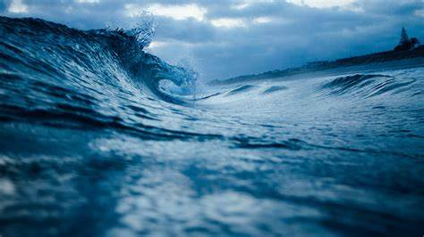

Objetivos Específicos
Este projeto tem como metas a criação de soluções tecnológicas inovadoras que aproveitem as energias marinhas de forma sustentável e eficaz.

1. Redução da Dependência de Fontes Fósseis
Diminuir a dependência de fontes de energia fósseis por meio da utilização de fontes renováveis, como as ondas e as marés, que são abundantes e previsíveis.
2. Aproveitamento de Recursos Naturais Abundantes
Aproveitar o grande potencial das zonas costeiras para gerar eletricidade de forma sustentável, utilizando as condições marítimas naturais e disponíveis.
3. Desenvolvimento de Tecnologias Sustentáveis
Investir em inovações tecnológicas que maximizem a captura de energia das ondas e marés, minimizando impactos ambientais e garantindo a sustentabilidade a longo prazo.